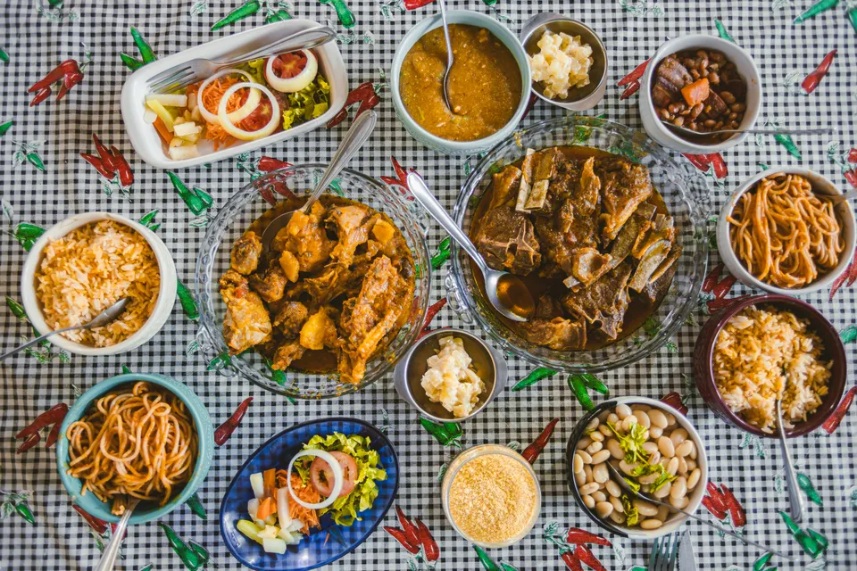
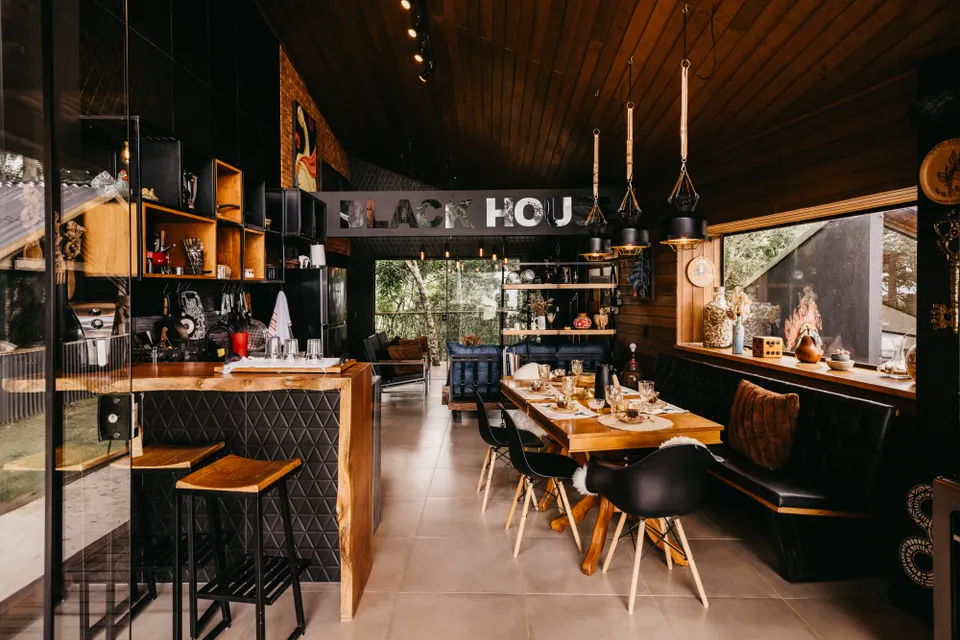
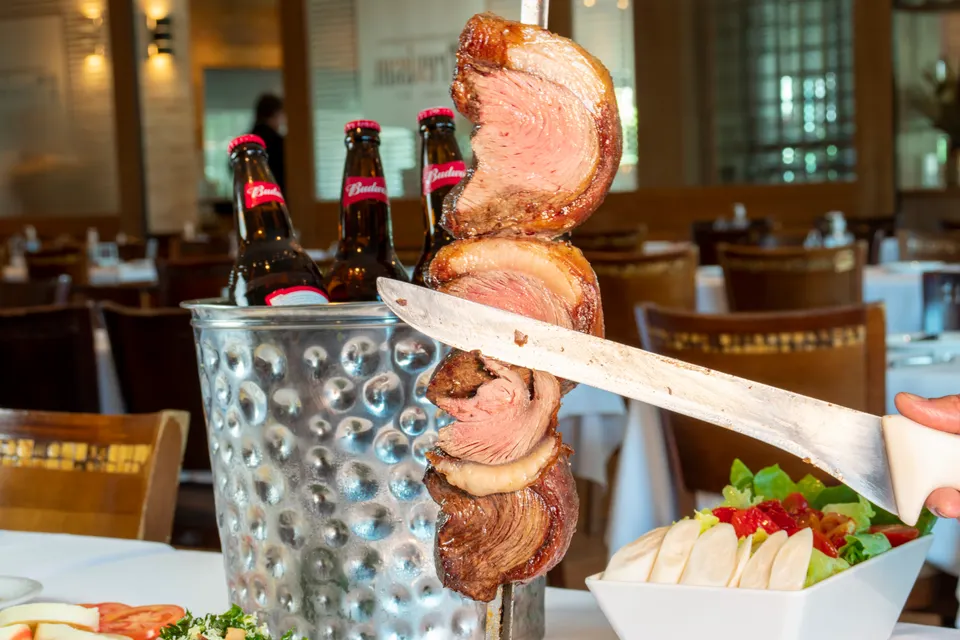

Buffet self-service
Monte seu prato com arroz soltinho, feijão caseiro, massas, legumes, saladas e pratos quentes que variam a cada dia.
Buffet por quilo: R$ 69,90/kg
Restaurante self-service e churrascaria

Comida brasileira feita com carinho
No Brasa & Sabor, você monta seu prato com receitas brasileiras, saladas frescas e cortes preparados na churrasqueira.
Conheça o cardápioMonte seu prato com arroz soltinho, feijão caseiro, massas, legumes, saladas e pratos quentes que variam a cada dia.
Buffet por quilo: R$ 69,90/kg
Picanha, fraldinha, linguiça artesanal e frango assado, servidos com farofa, vinagrete e mandioca.
Buffet com churrasco: R$ 89,90/kg
Algumas sugestões para o seu almoço. Os pratos do buffet podem variar diariamente.
Restaurante fictício. Todos os preços são ilustrativos.
O Brasa & Sabor nasceu da ideia de reunir a variedade do self-service com o sabor do churrasco brasileiro. Somos um restaurante fictício de ambiente simples e acolhedor, pensado para o almoço em família, com amigos ou durante a rotina de trabalho.
Nossa proposta é oferecer comida bem preparada, variedade e atendimento atencioso em cada visita.
Imagens ilustrativas do salão, do buffet e do churrasco brasileiro.

Salão e ambiente Buffet do dia
Buffet do dia
Churrasco na brasaEndereço e contatos fictícios, apenas para demonstração.